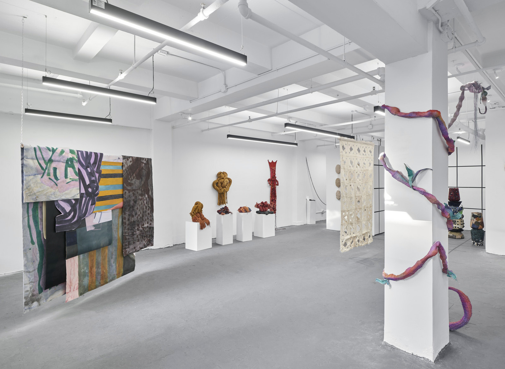

 Right: Draped Composition (In-Progress), 2024–25, acrylic, tempera, ink, oil paint on canvas and recycled fabrics, approximately 78” x 84”
Right: Draped Composition (In-Progress), 2024–25, acrylic, tempera, ink, oil paint on canvas and recycled fabrics, approximately 78” x 84”
Left: Seated Figure, 2025, 4K digital video, loop, 58” monitor
Seated Figure, 2025, 4K digital video, loop (video stills)